Test 2; with gravity data noise¶
import packages
[1]:
%load_ext autoreload
%autoreload 2
import logging
import os
import pathlib
import pickle
import string
import matplotlib.pyplot as plt
import numpy as np
import pandas as pd
import scipy as sp
import verde as vd
import xarray as xr
from invert4geom import inversion, plotting, regional, uncertainty, utils
from polartoolkit import maps, profiles
from polartoolkit import utils as polar_utils
import synthetic_bathymetry_inversion.plotting as synth_plotting
from synthetic_bathymetry_inversion import synthetic
os.environ["POLARTOOLKIT_HEMISPHERE"] = "south"
logging.getLogger().setLevel(logging.INFO)
/home/sungw937/miniforge3/envs/synthetic_bathymetry_inversion/lib/python3.12/site-packages/UQpy/__init__.py:6: UserWarning:
pkg_resources is deprecated as an API. See https://setuptools.pypa.io/en/latest/pkg_resources.html. The pkg_resources package is slated for removal as early as 2025-11-30. Refrain from using this package or pin to Setuptools<81.
[2]:
fpath = "../results/Ross_Sea/Ross_Sea_02"
Get synthetic model data¶
[3]:
# set grid parameters
spacing = 2e3
inversion_region = (-40e3, 110e3, -1600e3, -1400e3)
true_density_contrast = 1476
bathymetry, basement, grav_df = synthetic.load_synthetic_model(
spacing=spacing,
inversion_region=inversion_region,
buffer=spacing * 10,
gravity_noise=3, # 3 mGal after filtering gives 1 mGal RMSE
gravity_noise_wavelength=2e3,
zref=0,
bathymetry_density_contrast=true_density_contrast,
)
buffer_region = polar_utils.get_grid_info(bathymetry)[1]
requested spacing (2000.0) is smaller than the original (5000.0).
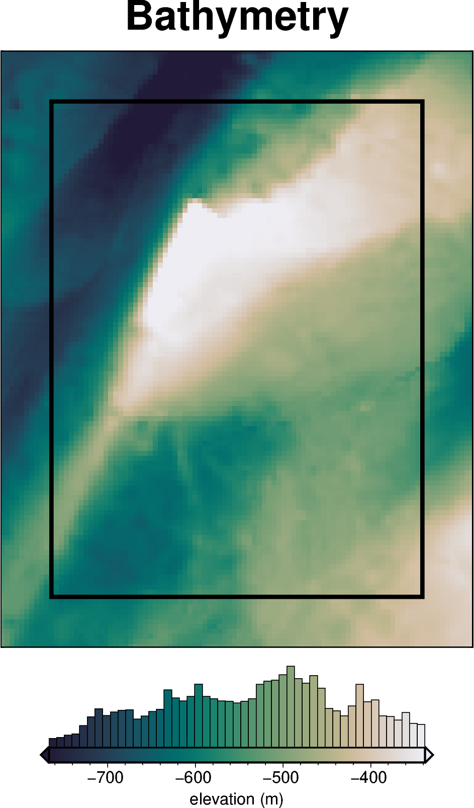
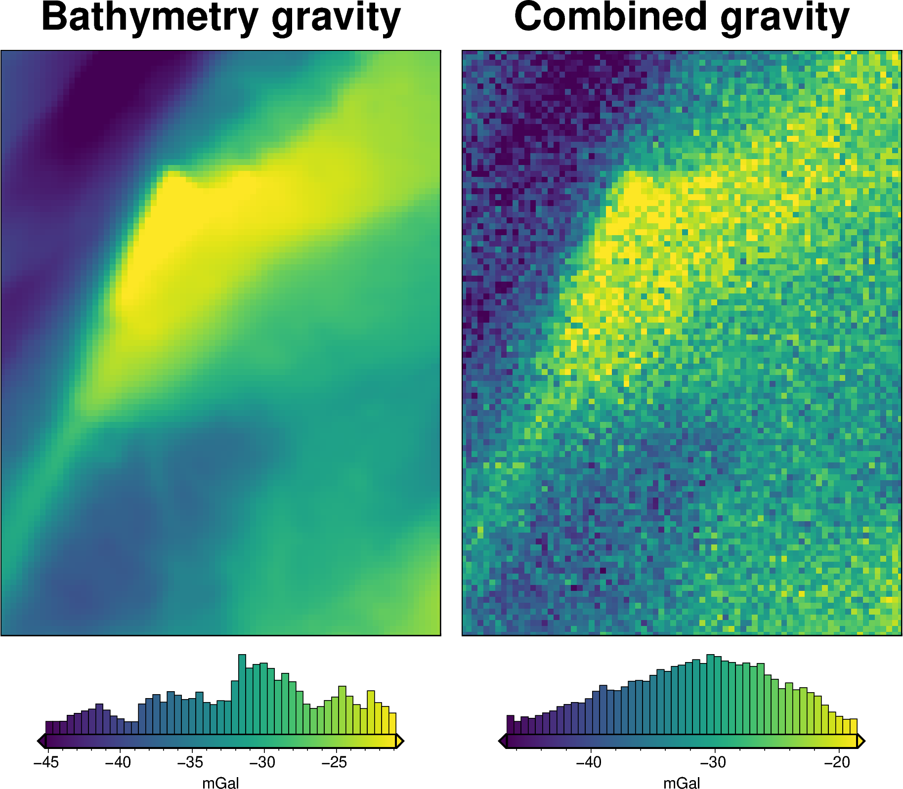
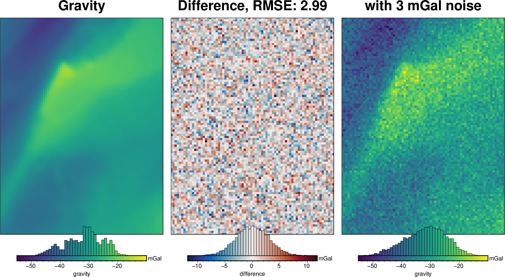
[4]:
filter_widths = np.arange(0, 34e3, 2e3)
filter_widths
[4]:
array([ 0., 2000., 4000., 6000., 8000., 10000., 12000., 14000.,
16000., 18000., 20000., 22000., 24000., 26000., 28000., 30000.,
32000.])
[5]:
dfs = []
for f in filter_widths:
if f == 0:
grav_df_filt = grav_df.copy()
else:
filtered_grav = utils.filter_grid(
grav_df.set_index(["northing", "easting"]).to_xarray().gravity_anomaly,
f,
filt_type="lowpass",
pad_mode="linear_ramp",
)
grav_df_filt = grav_df.copy()
grav_df_filt["gravity_anomaly"] = filtered_grav.to_numpy().ravel()
dfs.append(
pd.DataFrame(
[
{
"filt_width": f,
"rmse": utils.rmse(
grav_df_filt.noise_free_disturbance
- grav_df_filt.gravity_anomaly,
),
}
]
)
)
df = pd.concat(dfs, ignore_index=True)
df
[5]:
| filt_width | rmse | |
|---|---|---|
| 0 | 0.0 | 2.991005 |
| 1 | 2000.0 | 2.764011 |
| 2 | 4000.0 | 2.247810 |
| 3 | 6000.0 | 1.728592 |
| 4 | 8000.0 | 1.344717 |
| 5 | 10000.0 | 1.089794 |
| 6 | 12000.0 | 0.920326 |
| 7 | 14000.0 | 0.804231 |
| 8 | 16000.0 | 0.723484 |
| 9 | 18000.0 | 0.668162 |
| 10 | 20000.0 | 0.632411 |
| 11 | 22000.0 | 0.612373 |
| 12 | 24000.0 | 0.605184 |
| 13 | 26000.0 | 0.608508 |
| 14 | 28000.0 | 0.620355 |
| 15 | 30000.0 | 0.639029 |
| 16 | 32000.0 | 0.663110 |
[6]:
# save to a csv
df.to_csv(f"{fpath}_filter_width_rmse.csv", index=False)
[7]:
fig, ax = plt.subplots(figsize=(4, 3))
ax.plot(
df.filt_width / 1e3,
df.rmse,
marker="o",
)
best_ind = df.rmse.idxmin()
ax.scatter(
x=df.iloc[best_ind].filt_width / 1e3,
y=df.iloc[best_ind].rmse,
marker="s",
color="r",
s=80,
zorder=20,
label=f"Best: {round(df.iloc[best_ind].filt_width / 1e3, 2)} km",
)
ax.legend()
ax.set_xlabel("Filter width (km)")
ax.set_ylabel("RMSE (mGal)")
ax.set_title("Low-pass filtering of gravity data")
[7]:
Text(0.5, 1.0, 'Low-pass filtering of gravity data')
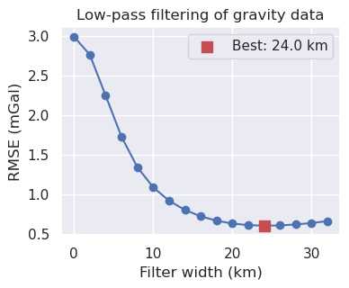
[8]:
filt_width = df.iloc[df.rmse.idxmin()].filt_width
print(f"Filter width: {filt_width / 1e3} km")
# filter each line in 1D with a Gaussian filter to remove some noise
filtered_grav = utils.filter_grid(
grav_df.set_index(["northing", "easting"]).to_xarray().gravity_anomaly,
filt_width,
filt_type="lowpass",
pad_mode="linear_ramp",
)
grav_df = grav_df.copy()
grav_df_filt["gravity_anomaly"] = filtered_grav.to_numpy().ravel()
grav_grid = grav_df_filt.set_index(["northing", "easting"]).to_xarray()
Filter width: 24.0 km
[9]:
filtered_grav = utils.filter_grid(
grav_df.set_index(["northing", "easting"]).to_xarray().gravity_anomaly,
10e3,
filt_type="lowpass",
pad_mode="linear_ramp",
)
_ = polar_utils.grd_compare(
grav_df.set_index(["northing", "easting"]).to_xarray().noise_free_disturbance,
filtered_grav,
grid1_name="Noise-free",
grid2_name="with noise and filtered at 10 km",
title="difference",
plot=True,
hist=True,
inset=False,
)
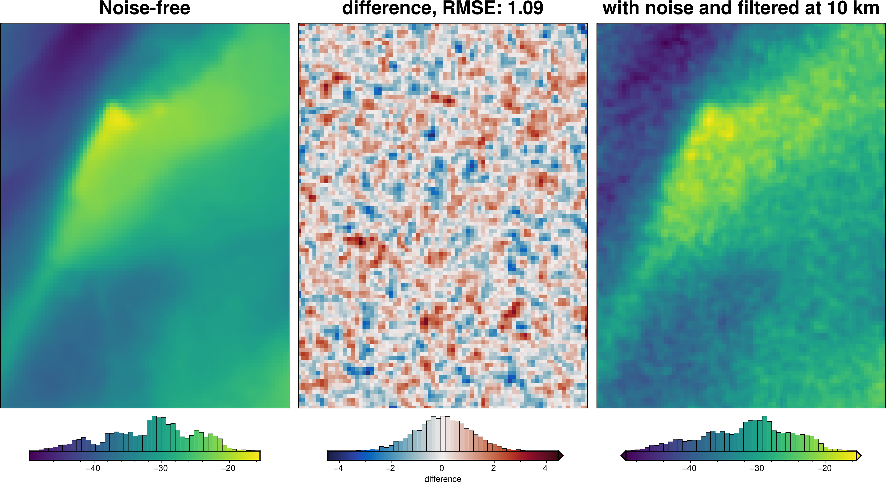
[10]:
_ = polar_utils.grd_compare(
grav_grid.noise_free_disturbance,
grav_grid.gravity_anomaly,
grid1_name="Noise-free",
grid2_name=f"with noise and filtered at {round(filt_width / 1e3, 2)} km",
title="difference",
plot=True,
hist=True,
inset=False,
)
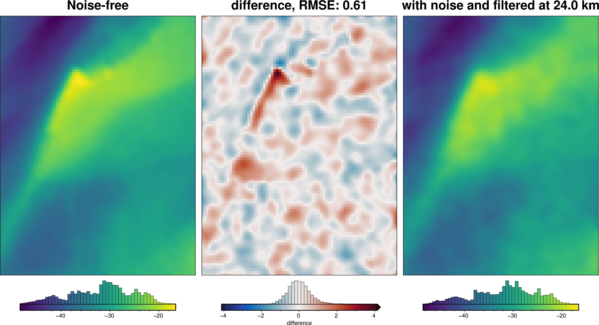
[11]:
grav_df["gravity_anomaly"] = grav_df_filt.gravity_anomaly
grav_df
[11]:
| northing | easting | upward | bathymetry_grav | basement_grav | noise_free_disturbance | disturbance | uncert | gravity_anomaly | |
|---|---|---|---|---|---|---|---|---|---|
| 0 | -1600000.0 | -40000.0 | 1000.0 | -35.551054 | 0 | -35.551054 | -36.610773 | 3 | -35.473466 |
| 1 | -1600000.0 | -38000.0 | 1000.0 | -36.054657 | 0 | -36.054657 | -38.542478 | 3 | -35.814409 |
| 2 | -1600000.0 | -36000.0 | 1000.0 | -36.473146 | 0 | -36.473146 | -37.487424 | 3 | -36.152914 |
| 3 | -1600000.0 | -34000.0 | 1000.0 | -36.755608 | 0 | -36.755608 | -32.869103 | 3 | -36.451007 |
| 4 | -1600000.0 | -32000.0 | 1000.0 | -36.951029 | 0 | -36.951029 | -39.690063 | 3 | -36.671189 |
| ... | ... | ... | ... | ... | ... | ... | ... | ... | ... |
| 7671 | -1400000.0 | 102000.0 | 1000.0 | -25.760090 | 0 | -25.760090 | -26.837400 | 3 | -25.264014 |
| 7672 | -1400000.0 | 104000.0 | 1000.0 | -25.911429 | 0 | -25.911429 | -28.896369 | 3 | -24.990153 |
| 7673 | -1400000.0 | 106000.0 | 1000.0 | -26.032814 | 0 | -26.032814 | -21.663255 | 3 | -24.927625 |
| 7674 | -1400000.0 | 108000.0 | 1000.0 | -26.121903 | 0 | -26.121903 | -20.191439 | 3 | -25.259400 |
| 7675 | -1400000.0 | 110000.0 | 1000.0 | -26.206160 | 0 | -26.206160 | -30.581713 | 3 | -25.992598 |
7676 rows × 9 columns
Make starting bathymetry model¶
[12]:
# semi-regularly spaced
constraint_points = synthetic.constraint_layout_number(
shape=(6, 7),
region=inversion_region,
padding=-spacing,
shapefile="../results/Ross_Sea/Ross_Sea_outline.shp",
add_outside_points=True,
grid_spacing=spacing,
)
# sample true topography at these points
constraint_points = utils.sample_grids(
constraint_points,
bathymetry,
"true_upward",
coord_names=("easting", "northing"),
)
constraint_points["upward"] = constraint_points.true_upward
constraint_points.head()
[12]:
| northing | easting | inside | true_upward | upward | |
|---|---|---|---|---|---|
| 0 | -1600000.0 | -40000.0 | False | -601.093994 | -601.093994 |
| 1 | -1600000.0 | -38000.0 | False | -609.216919 | -609.216919 |
| 2 | -1600000.0 | -36000.0 | False | -616.355957 | -616.355957 |
| 3 | -1600000.0 | -34000.0 | False | -621.262268 | -621.262268 |
| 4 | -1600000.0 | -32000.0 | False | -625.510925 | -625.510925 |
[13]:
# grid the sampled values using verde
starting_topography_kwargs = dict(
method="splines",
region=buffer_region,
spacing=spacing,
constraints_df=constraint_points,
dampings=None,
)
starting_bathymetry = utils.create_topography(**starting_topography_kwargs)
starting_bathymetry
[13]:
<xarray.DataArray 'scalars' (northing: 121, easting: 96)> Size: 93kB
array([[-541.24413869, -544.57181187, -547.92293689, ..., -360.00006254,
-357.06767408, -354.19957766],
[-543.34402688, -546.81675803, -550.35256333, ..., -362.90253226,
-359.96874158, -357.11431886],
[-545.05533622, -548.66036838, -552.37518163, ..., -365.66137905,
-362.73269531, -359.90052824],
...,
[-591.95335283, -595.518822 , -599.06869705, ..., -440.89315875,
-440.6944619 , -440.40553782],
[-590.53134833, -594.09076637, -597.64079288, ..., -440.69158328,
-440.42525249, -440.07197234],
[-589.16632671, -592.73504777, -596.30209679, ..., -440.51760947,
-440.1713932 , -439.74434037]], shape=(121, 96))
Coordinates:
* northing (northing) float64 968B -1.62e+06 -1.618e+06 ... -1.38e+06
* easting (easting) float64 768B -6e+04 -5.8e+04 ... 1.28e+05 1.3e+05
Attributes:
metadata: Generated by SplineCV(cv=KFold(n_splits=5, random_state=0, shu...
damping: None[14]:
# sample the inverted topography at the constraint points
constraint_points = utils.sample_grids(
constraint_points,
starting_bathymetry,
"starting_bathymetry",
coord_names=("easting", "northing"),
)
rmse = utils.rmse(constraint_points.upward - constraint_points.starting_bathymetry)
print(f"RMSE: {rmse:.2f} m")
RMSE: 0.03 m
[15]:
# compare starting and actual bathymetry grids
grids = polar_utils.grd_compare(
bathymetry,
starting_bathymetry,
fig_height=10,
plot=True,
cmap="rain",
reverse_cpt=True,
diff_cmap="balance+h0",
grid1_name="True bathymetry",
grid2_name="Starting bathymetry",
title="Difference",
title_font="18p,Helvetica-Bold,black",
cbar_unit="m",
cbar_label="elevation",
RMSE_decimals=0,
region=inversion_region,
inset=False,
hist=True,
label_font="16p,Helvetica,black",
points=constraint_points[constraint_points.inside],
points_style="x.2c",
)
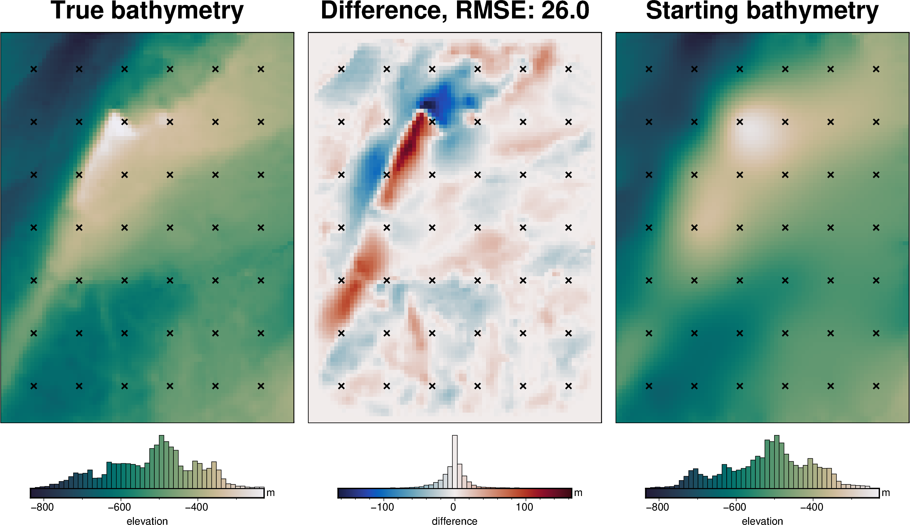
[16]:
# the true density contrast is 1476 kg/m3
density_contrast = 1350
# set the reference level from the prisms to 0
zref = 0
density_grid = xr.where(
starting_bathymetry >= zref,
density_contrast,
-density_contrast,
)
# create layer of prisms
starting_prisms = utils.grids_to_prisms(
starting_bathymetry,
zref,
density=density_grid,
)
grav_df["starting_gravity"] = starting_prisms.prism_layer.gravity(
coordinates=(
grav_df.easting,
grav_df.northing,
grav_df.upward,
),
field="g_z",
progressbar=True,
)
grav_df
[16]:
| northing | easting | upward | bathymetry_grav | basement_grav | noise_free_disturbance | disturbance | uncert | gravity_anomaly | starting_gravity | |
|---|---|---|---|---|---|---|---|---|---|---|
| 0 | -1600000.0 | -40000.0 | 1000.0 | -35.551054 | 0 | -35.551054 | -36.610773 | 3 | -35.473466 | -32.541367 |
| 1 | -1600000.0 | -38000.0 | 1000.0 | -36.054657 | 0 | -36.054657 | -38.542478 | 3 | -35.814409 | -32.965831 |
| 2 | -1600000.0 | -36000.0 | 1000.0 | -36.473146 | 0 | -36.473146 | -37.487424 | 3 | -36.152914 | -33.347648 |
| 3 | -1600000.0 | -34000.0 | 1000.0 | -36.755608 | 0 | -36.755608 | -32.869103 | 3 | -36.451007 | -33.644496 |
| 4 | -1600000.0 | -32000.0 | 1000.0 | -36.951029 | 0 | -36.951029 | -39.690063 | 3 | -36.671189 | -33.840063 |
| ... | ... | ... | ... | ... | ... | ... | ... | ... | ... | ... |
| 7671 | -1400000.0 | 102000.0 | 1000.0 | -25.760090 | 0 | -25.760090 | -26.837400 | 3 | -25.264014 | -23.321506 |
| 7672 | -1400000.0 | 104000.0 | 1000.0 | -25.911429 | 0 | -25.911429 | -28.896369 | 3 | -24.990153 | -23.482116 |
| 7673 | -1400000.0 | 106000.0 | 1000.0 | -26.032814 | 0 | -26.032814 | -21.663255 | 3 | -24.927625 | -23.605602 |
| 7674 | -1400000.0 | 108000.0 | 1000.0 | -26.121903 | 0 | -26.121903 | -20.191439 | 3 | -25.259400 | -23.693171 |
| 7675 | -1400000.0 | 110000.0 | 1000.0 | -26.206160 | 0 | -26.206160 | -30.581713 | 3 | -25.992598 | -23.763780 |
7676 rows × 10 columns
[17]:
regional_grav_kwargs = dict(
method="constant",
constraints_df=constraint_points,
)
grav_df = regional.regional_separation(
grav_df=grav_df,
**regional_grav_kwargs,
)
grav_df
[17]:
| northing | easting | upward | bathymetry_grav | basement_grav | noise_free_disturbance | disturbance | uncert | gravity_anomaly | starting_gravity | misfit | reg | res | |
|---|---|---|---|---|---|---|---|---|---|---|---|---|---|
| 0 | -1600000.0 | -40000.0 | 1000.0 | -35.551054 | 0 | -35.551054 | -36.610773 | 3 | -35.473466 | -32.541367 | -2.932099 | -2.679373 | -0.252726 |
| 1 | -1600000.0 | -38000.0 | 1000.0 | -36.054657 | 0 | -36.054657 | -38.542478 | 3 | -35.814409 | -32.965831 | -2.848578 | -2.679373 | -0.169205 |
| 2 | -1600000.0 | -36000.0 | 1000.0 | -36.473146 | 0 | -36.473146 | -37.487424 | 3 | -36.152914 | -33.347648 | -2.805266 | -2.679373 | -0.125893 |
| 3 | -1600000.0 | -34000.0 | 1000.0 | -36.755608 | 0 | -36.755608 | -32.869103 | 3 | -36.451007 | -33.644496 | -2.806512 | -2.679373 | -0.127139 |
| 4 | -1600000.0 | -32000.0 | 1000.0 | -36.951029 | 0 | -36.951029 | -39.690063 | 3 | -36.671189 | -33.840063 | -2.831126 | -2.679373 | -0.151753 |
| ... | ... | ... | ... | ... | ... | ... | ... | ... | ... | ... | ... | ... | ... |
| 7671 | -1400000.0 | 102000.0 | 1000.0 | -25.760090 | 0 | -25.760090 | -26.837400 | 3 | -25.264014 | -23.321506 | -1.942508 | -2.679373 | 0.736865 |
| 7672 | -1400000.0 | 104000.0 | 1000.0 | -25.911429 | 0 | -25.911429 | -28.896369 | 3 | -24.990153 | -23.482116 | -1.508037 | -2.679373 | 1.171336 |
| 7673 | -1400000.0 | 106000.0 | 1000.0 | -26.032814 | 0 | -26.032814 | -21.663255 | 3 | -24.927625 | -23.605602 | -1.322022 | -2.679373 | 1.357351 |
| 7674 | -1400000.0 | 108000.0 | 1000.0 | -26.121903 | 0 | -26.121903 | -20.191439 | 3 | -25.259400 | -23.693171 | -1.566230 | -2.679373 | 1.113143 |
| 7675 | -1400000.0 | 110000.0 | 1000.0 | -26.206160 | 0 | -26.206160 | -30.581713 | 3 | -25.992598 | -23.763780 | -2.228818 | -2.679373 | 0.450555 |
7676 rows × 13 columns
[18]:
grav_grid = grav_df.set_index(["northing", "easting"]).to_xarray()
fig = maps.plot_grd(
grav_grid.gravity_anomaly,
region=inversion_region,
fig_height=10,
title="Partial Topo-free disturbance",
cmap="balance+h0",
hist=True,
cbar_label="mGal",
frame=["nSWe", "xaf10000", "yaf10000"],
)
fig = maps.plot_grd(
grav_grid.misfit,
region=inversion_region,
fig=fig,
origin_shift="xshift",
fig_height=10,
title="Misfit",
cmap="balance+h0",
hist=True,
cbar_label="mGal",
frame=["nSwE", "xaf10000", "yaf10000"],
)
fig = maps.plot_grd(
grav_grid.reg,
region=inversion_region,
fig=fig,
origin_shift="xshift",
fig_height=10,
title="Regional misfit",
cmap="balance+h0",
hist=True,
cbar_label="mGal",
frame=["nSwE", "xaf10000", "yaf10000"],
)
fig = maps.plot_grd(
grav_grid.res,
region=inversion_region,
fig=fig,
origin_shift="xshift",
fig_height=10,
title="Residual misfit",
cmap="balance+h0",
cpt_lims=[-vd.maxabs(grav_grid.res), vd.maxabs(grav_grid.res)],
hist=True,
cbar_label="mGal",
frame=["nSwE", "xaf10000", "yaf10000"],
points=constraint_points[constraint_points.inside],
points_style="x.2c",
)
fig.show()
makecpt [ERROR]: Option T: min >= max
supplied min value is greater or equal to max value
Grid/points are a constant value, can't make a colorbar histogram!
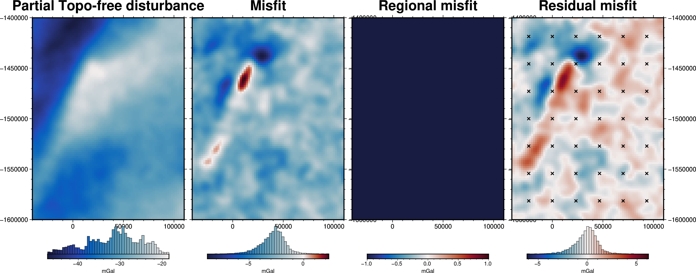
[19]:
# set kwargs to pass to the inversion
kwargs = {
# set stopping criteria
"max_iterations": 200,
"l2_norm_tolerance": grav_df.uncert.mean()
** 0.5, # square root of the gravity noise
"delta_l2_norm_tolerance": 1.008,
}
Damping Cross Validation¶
[20]:
logging.getLogger().setLevel(logging.INFO)
# run the inversion workflow, including a cross validation for the damping parameter
results = inversion.run_inversion_workflow(
grav_df=grav_df,
starting_prisms=starting_prisms,
# for creating test/train splits
grav_spacing=spacing,
inversion_region=inversion_region,
run_damping_cv=True,
damping_limits=(0.001, 0.1),
damping_cv_trials=8,
fname=f"{fpath}_damping_cv",
**kwargs,
)
[20]:
# load saved inversion results
with pathlib.Path(f"{fpath}_damping_cv_results.pickle").open("rb") as f:
results = pickle.load(f)
# load study
with pathlib.Path(f"{fpath}_damping_cv_damping_cv_study.pickle").open("rb") as f:
study = pickle.load(f)
# collect the results
topo_results, grav_results, parameters, elapsed_time = results
[21]:
best_damping = parameters.get("Solver damping")
kwargs["solver_damping"] = best_damping
best_damping
[21]:
0.01406058612011891
[22]:
study_df = study.trials_dataframe()
plotting.plot_cv_scores(
study_df.value,
study_df.params_damping,
param_name="Damping",
logx=True,
logy=True,
)
plotting.plot_convergence(
grav_results,
params=parameters,
)
plotting.plot_inversion_results(
grav_results,
topo_results,
parameters,
inversion_region,
iters_to_plot=2,
plot_iter_results=True,
plot_topo_results=True,
plot_grav_results=True,
)
final_topography = topo_results.set_index(["northing", "easting"]).to_xarray().topo
_ = polar_utils.grd_compare(
bathymetry,
final_topography,
region=inversion_region,
plot=True,
grid1_name="True topography",
grid2_name="Inverted topography",
robust=True,
hist=True,
inset=False,
verbose="q",
title="difference",
grounding_line=False,
reverse_cpt=True,
cmap="rain",
points=constraint_points[constraint_points.inside],
points_style="x.2c",
)
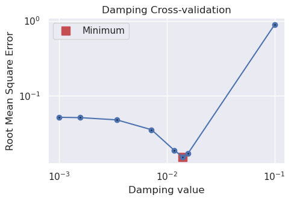
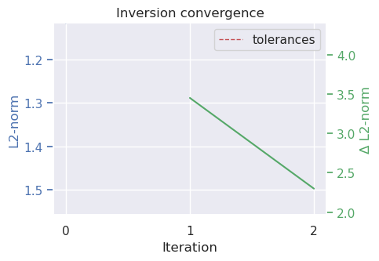
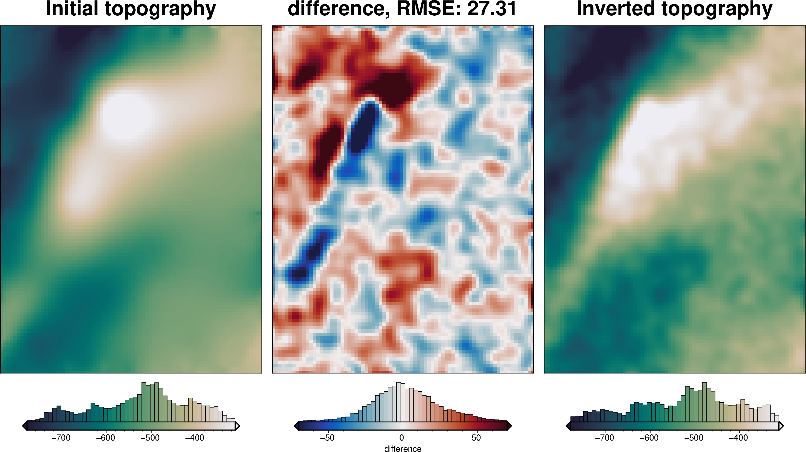
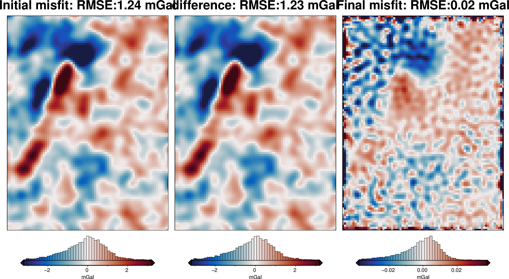
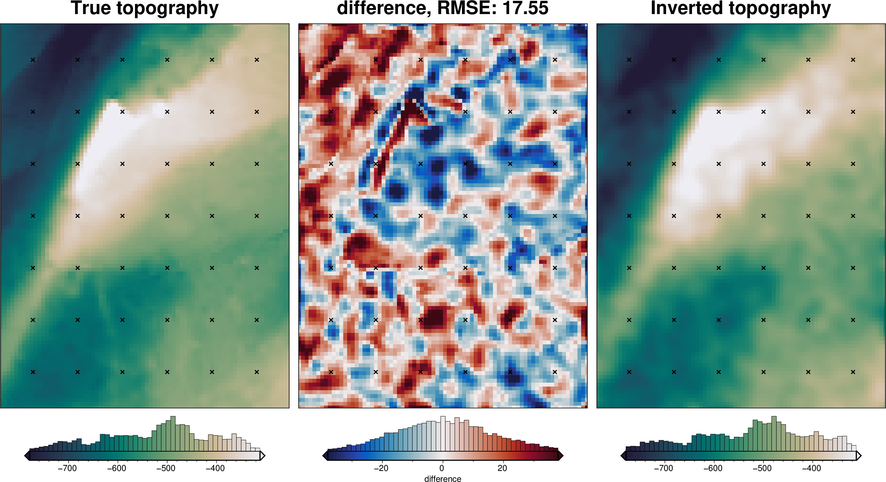
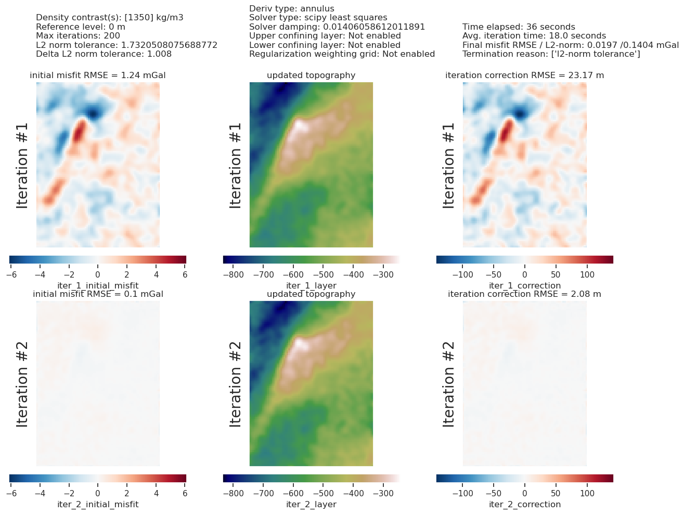
[23]:
# sample the inverted topography at the constraint points
constraint_points = utils.sample_grids(
constraint_points,
final_topography,
"inverted_topography",
coord_names=("easting", "northing"),
)
rmse = utils.rmse(constraint_points.upward - constraint_points.inverted_topography)
print(f"RMSE: {rmse:.2f} m")
RMSE: 22.58 m
Density CV¶
[25]:
logging.getLogger().setLevel(logging.INFO)
# run the inversion workflow, including a cross validation for the damping parameter
results = inversion.run_inversion_workflow(
grav_df=grav_df,
starting_topography=starting_bathymetry,
zref=0,
calculate_regional_misfit=True,
regional_grav_kwargs=dict(
grav_df=grav_df,
method="constant",
constant=0,
),
run_zref_or_density_cv=True,
constraints_df=constraint_points,
density_contrast_limits=(1000, 2400),
zref_density_cv_trials=10,
fname=f"{fpath}_density_cv",
**kwargs,
)
'reg' already a column of `grav_df`, but is being overwritten since calculate_regional_misfit is True
'starting_gravity' already a column of `grav_df`, but is being overwritten since calculate_starting_gravity is True
'reg' already a column of `grav_df`, but is being overwritten since calculate_regional_misfit is True
[24]:
# load saved inversion results
with pathlib.Path(f"{fpath}_density_cv_results.pickle").open("rb") as f:
results = pickle.load(f)
# collect the results
topo_results, grav_results, parameters, elapsed_time = results
# load study
with pathlib.Path(f"{fpath}_density_cv_zref_density_cv_study.pickle").open("rb") as f:
study = pickle.load(f)
[25]:
best_density_contrast = study.best_params["density_contrast"]
print("optimal determined density contrast", best_density_contrast)
print("real density contrast", true_density_contrast)
optimal determined density contrast 1471
real density contrast 1476
[26]:
study_df = study.trials_dataframe()
fig = plotting.plot_cv_scores(
study_df.value,
study_df.params_density_contrast,
param_name="Density contrast",
)
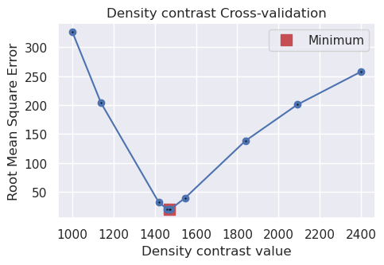
Redo with optimal density contrast¶
During the density cross-validation to avoid biasing the scores, we had to manually set a regional field. Now, with the optimal density contrast value found, we can rerun the inversion with an automatically determined regional field strength (the average value misfit at the constraints).
[27]:
density_contrast = best_density_contrast
density_grid = xr.where(
starting_bathymetry >= zref,
density_contrast,
-density_contrast,
)
# create layer of prisms
starting_prisms = utils.grids_to_prisms(
starting_bathymetry,
zref,
density=density_grid,
)
grav_df["starting_gravity"] = starting_prisms.prism_layer.gravity(
coordinates=(
grav_df.easting,
grav_df.northing,
grav_df.upward,
),
field="g_z",
progressbar=True,
)
grav_df = regional.regional_separation(
grav_df=grav_df,
**regional_grav_kwargs,
)
[28]:
grav_grid = grav_df.set_index(["northing", "easting"]).to_xarray()
fig = maps.plot_grd(
grav_grid.gravity_anomaly,
region=inversion_region,
fig_height=10,
title="Partial Topo-free disturbance",
cmap="balance+h0",
hist=True,
cbar_label="mGal",
frame=["nSWe", "xaf10000", "yaf10000"],
)
fig = maps.plot_grd(
grav_grid.misfit,
region=inversion_region,
fig=fig,
origin_shift="xshift",
fig_height=10,
title="Misfit",
cmap="balance+h0",
hist=True,
cbar_label="mGal",
frame=["nSwE", "xaf10000", "yaf10000"],
)
fig = maps.plot_grd(
grav_grid.reg,
region=inversion_region,
fig=fig,
origin_shift="xshift",
fig_height=10,
title="Regional misfit",
cmap="balance+h0",
hist=True,
cbar_label="mGal",
frame=["nSwE", "xaf10000", "yaf10000"],
)
fig = maps.plot_grd(
grav_grid.res,
region=inversion_region,
fig=fig,
origin_shift="xshift",
fig_height=10,
title="Residual misfit",
cmap="balance+h0",
cpt_lims=[-vd.maxabs(grav_grid.res), vd.maxabs(grav_grid.res)],
hist=True,
cbar_label="mGal",
frame=["nSwE", "xaf10000", "yaf10000"],
points=constraint_points,
points_style="x.2c",
)
fig.show()
makecpt [ERROR]: Option T: min >= max
supplied min value is greater or equal to max value
Grid/points are a constant value, can't make a colorbar histogram!
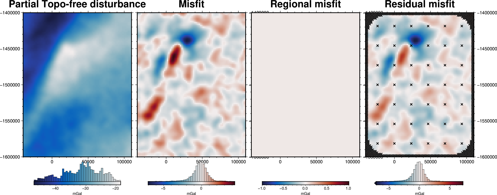
[29]:
# run the inversion workflow
inversion_results = inversion.run_inversion_workflow(
grav_df=grav_df,
fname=f"{fpath}_optimal",
starting_prisms=starting_prisms,
plot_dynamic_convergence=True,
**kwargs,
)
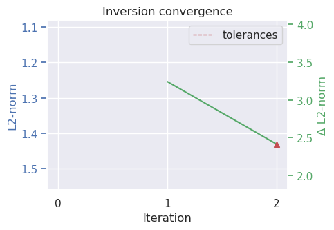
[30]:
# load saved inversion results
with pathlib.Path(f"{fpath}_optimal_results.pickle").open("rb") as f:
results = pickle.load(f)
# collect the results
topo_results, grav_results, parameters, elapsed_time = results
final_topography = topo_results.set_index(["northing", "easting"]).to_xarray().topo
[31]:
_ = polar_utils.grd_compare(
bathymetry,
final_topography,
fig_height=10,
region=inversion_region,
plot=True,
grid1_name="True topography",
grid2_name="Inverted topography",
robust=True,
hist=True,
inset=False,
verbose="q",
title="Error",
grounding_line=False,
reverse_cpt=True,
cmap="rain",
points=constraint_points[constraint_points.inside],
points_style="x.2c",
)
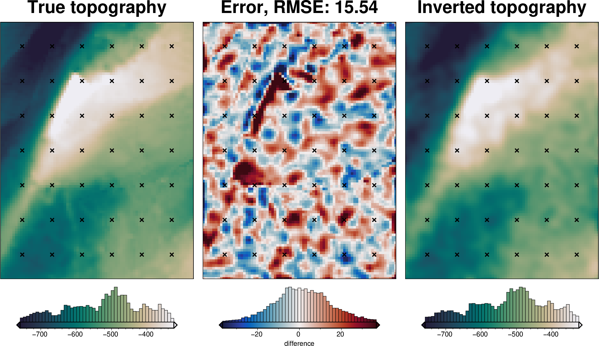
[32]:
plotting.plot_inversion_results(
grav_results,
topo_results,
parameters,
inversion_region,
iters_to_plot=2,
plot_iter_results=True,
plot_topo_results=True,
plot_grav_results=True,
)
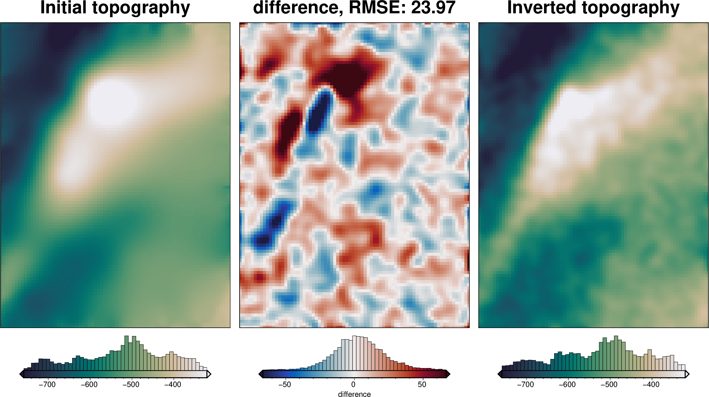
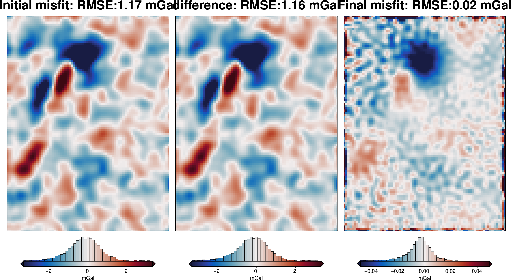
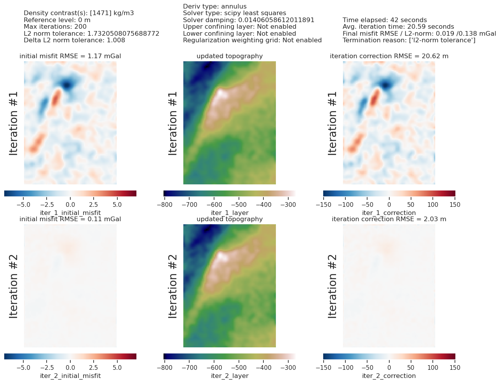
[33]:
# sample the inverted topography at the constraint points
constraint_points = utils.sample_grids(
constraint_points,
final_topography,
"inverted_topography",
coord_names=("easting", "northing"),
)
rmse = utils.rmse(constraint_points.upward - constraint_points.inverted_topography)
print(f"RMSE: {rmse:.2f} m")
RMSE: 19.53 m
[34]:
# save to csv
constraint_points.to_csv(f"{fpath}_constraint_points.csv", index=False)
[35]:
constraint_points = pd.read_csv(f"{fpath}_constraint_points.csv")
constraint_points
[35]:
| northing | easting | inside | true_upward | upward | starting_bathymetry | inverted_topography | |
|---|---|---|---|---|---|---|---|
| 0 | -1.600000e+06 | -4.000000e+04 | False | -601.093994 | -601.093994 | -601.093994 | -606.327698 |
| 1 | -1.600000e+06 | -3.800000e+04 | False | -609.216919 | -609.216919 | -609.216919 | -610.490051 |
| 2 | -1.600000e+06 | -3.600000e+04 | False | -616.355957 | -616.355957 | -616.355957 | -613.916565 |
| 3 | -1.600000e+06 | -3.400000e+04 | False | -621.262268 | -621.262268 | -621.262268 | -617.907288 |
| 4 | -1.600000e+06 | -3.200000e+04 | False | -625.510925 | -625.510925 | -625.510925 | -622.178467 |
| ... | ... | ... | ... | ... | ... | ... | ... |
| 881 | -1.418571e+06 | -3.637979e-12 | True | -747.305711 | -747.305711 | -747.289192 | -758.786011 |
| 882 | -1.418571e+06 | 2.333333e+04 | True | -619.672055 | -619.672055 | -619.459742 | -623.038431 |
| 883 | -1.418571e+06 | 4.666667e+04 | True | -505.761536 | -505.761536 | -505.739808 | -519.610493 |
| 884 | -1.418571e+06 | 7.000000e+04 | True | -447.753091 | -447.753091 | -447.782831 | -429.904140 |
| 885 | -1.418571e+06 | 9.333333e+04 | True | -395.004206 | -395.004206 | -395.079663 | -411.365617 |
886 rows × 7 columns
Uncertainty analysis¶
Inversion error¶
[36]:
inversion_error = np.abs(bathymetry - final_topography)
fig = maps.plot_grd(
inversion_error,
region=inversion_region,
hist=True,
cmap="thermal",
title="Absolute value of inversion error",
robust=True,
points=constraint_points[constraint_points.inside],
points_style="x.3c",
points_fill="white",
points_pen="2p",
)
fig.show()
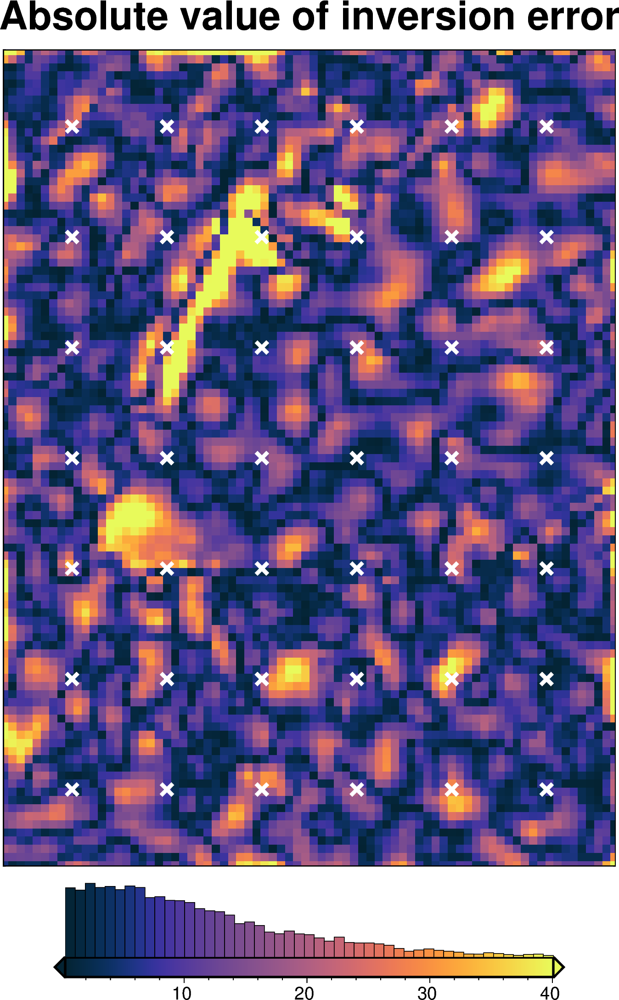
[37]:
# kwargs to reuse for all uncertainty analyses
uncert_kwargs = dict(
grav_df=grav_df,
density_contrast=best_density_contrast,
zref=zref,
starting_prisms=starting_prisms,
starting_topography=starting_bathymetry,
regional_grav_kwargs=regional_grav_kwargs,
**kwargs,
)
Solver damping component¶
[38]:
# load study
with pathlib.Path(f"{fpath}_damping_cv_damping_cv_study.pickle").open("rb") as f:
study = pickle.load(f)
study_df = study.trials_dataframe().drop(columns=["user_attrs_results"])
study_df = study_df.sort_values("value")
# calculate zscores of values
study_df["value_zscore"] = sp.stats.zscore(study_df["value"])
# drop outliers (values with zscore > |2|)
study_df2 = study_df[(np.abs(study_df.value_zscore) < 2)]
# pick damping standard deviation based on optimization
stdev = np.log10(study_df2.params_damping).std()
print(f"calculated stdev: {stdev}")
stdev = stdev / 2
print(f"using stdev: {stdev}")
calculated stdev: 0.4792126581484365
using stdev: 0.23960632907421825
[39]:
fig = plotting.plot_cv_scores(
study_df.value,
study_df.params_damping,
param_name="Damping",
logx=True,
logy=True,
)
ax = fig.axes[0]
best = float(study_df2.params_damping.iloc[0])
upper = float(10 ** (np.log10(best) + stdev))
lower = float(10 ** (np.log10(best) - stdev))
y_lims = ax.get_ylim()
ax.vlines(best, ymin=y_lims[0], ymax=y_lims[1], color="r")
ax.vlines(upper, ymin=y_lims[0], ymax=y_lims[1], label="+/- std")
ax.vlines(lower, ymin=y_lims[0], ymax=y_lims[1])
x_lims = ax.get_xlim()
ax.set_xlim(
min(x_lims[0], lower),
max(x_lims[1], upper),
)
ax.legend()
print("best:", best, "\nstd:", stdev, "\n+1std:", upper, "\n-1std:", lower)
best: 0.01406058612011891
std: 0.23960632907421825
+1std: 0.024412359332848386
-1std: 0.008098360316008565
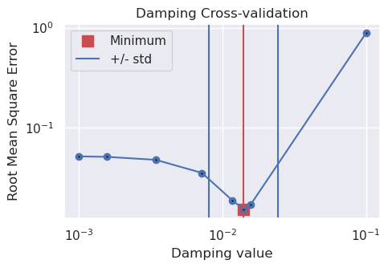
[40]:
solver_dict = {
"solver_damping": {
"distribution": "normal",
"loc": np.log10(best_damping), # mean of base 10 exponent
"scale": stdev, # standard deviation of base 10 exponent
"log": True,
},
}
fname = f"{fpath}_uncertainty_damping"
# delete files if already exist
for p in pathlib.Path().glob(f"{fname}*"):
p.unlink(missing_ok=True)
uncert_damping_results = uncertainty.full_workflow_uncertainty_loop(
fname=fname,
runs=10,
parameter_dict=solver_dict,
**uncert_kwargs,
)
stats_ds = synth_plotting.uncert_plots(
uncert_damping_results,
inversion_region,
bathymetry,
deterministic_bathymetry=final_topography,
constraint_points=constraint_points[constraint_points.inside],
weight_by="constraints",
)
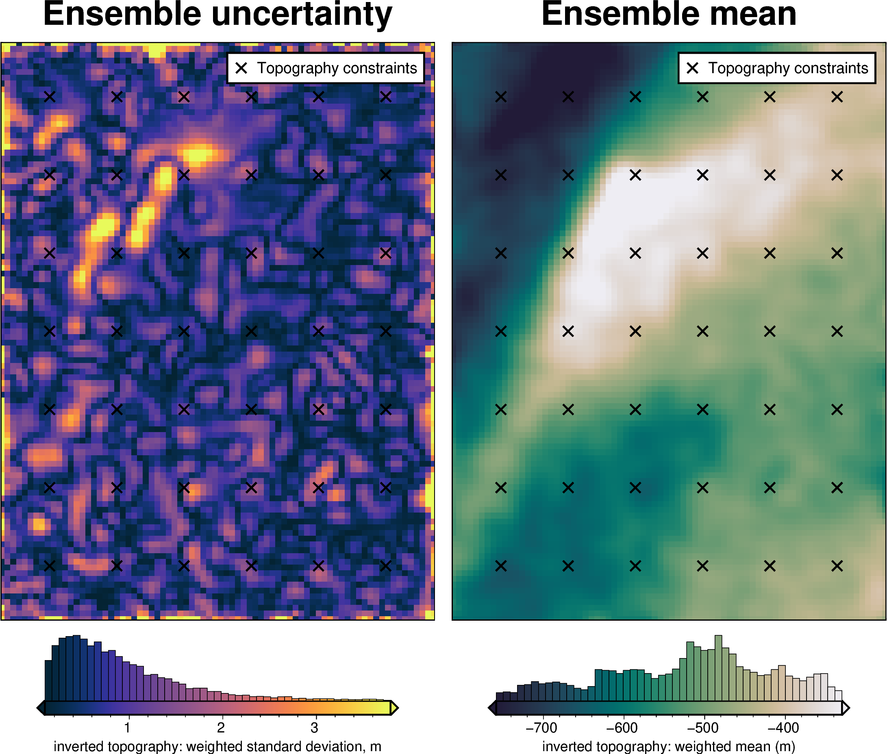
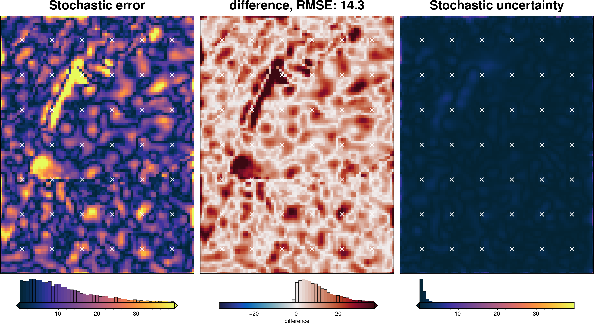
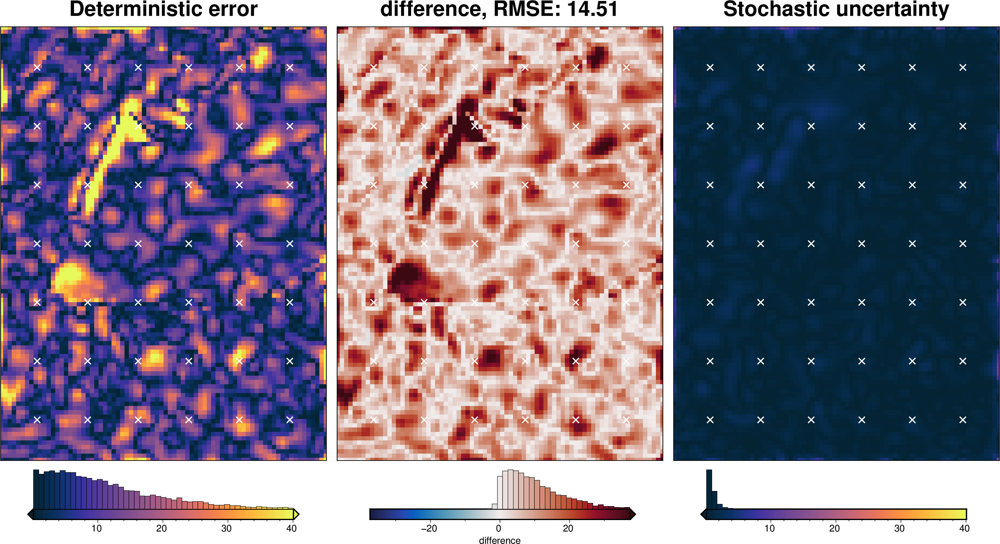
Density component¶
[41]:
# load study
with pathlib.Path(f"{fpath}_density_cv_zref_density_cv_study.pickle").open("rb") as f:
study = pickle.load(f)
study_df = study.trials_dataframe()
study_df = study_df.sort_values("value")
# calculate zscores of values
study_df["value_zscore"] = sp.stats.zscore(study_df["value"])
# drop outliers (values with zscore > |2|)
study_df2 = study_df[(np.abs(study_df.value_zscore) < 2)]
stdev = study_df2.params_density_contrast.std()
print(f"calculated stdev: {stdev}")
# manually pick a stdev
stdev = 5
print(f"using stdev: {stdev}")
print(
f"density estimation error: {np.abs(true_density_contrast - best_density_contrast)}"
)
calculated stdev: 421.3222572383809
using stdev: 5
density estimation error: 5
[42]:
fig = plotting.plot_cv_scores(
study.trials_dataframe().value.to_numpy(),
study.trials_dataframe().params_density_contrast.values,
param_name="Density",
logx=False,
logy=False,
)
ax = fig.axes[0]
best = study_df2.params_density_contrast.iloc[0]
upper = best + stdev
lower = best - stdev
y_lims = ax.get_ylim()
ax.vlines(best, ymin=y_lims[0], ymax=y_lims[1], color="r")
ax.vlines(upper, ymin=y_lims[0], ymax=y_lims[1], label="+/- std")
ax.vlines(lower, ymin=y_lims[0], ymax=y_lims[1])
x_lims = ax.get_xlim()
ax.set_xlim(
min(x_lims[0], lower),
max(x_lims[1], upper),
)
ax.legend()
print("best:", best, "\nstd:", stdev, "\n+1std:", upper, "\n-1std:", lower)
best: 1471
std: 5
+1std: 1476
-1std: 1466
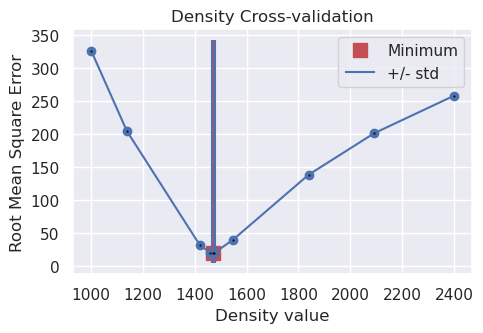
[43]:
density_dict = {
"density_contrast": {
"distribution": "normal",
"loc": best_density_contrast,
"scale": stdev,
},
}
fname = f"{fpath}_uncertainty_density"
# delete files if already exist
for p in pathlib.Path().glob(f"{fname}*"):
p.unlink(missing_ok=True)
uncert_density_results = uncertainty.full_workflow_uncertainty_loop(
fname=fname,
runs=10,
parameter_dict=density_dict,
**uncert_kwargs,
)
stats_ds = synth_plotting.uncert_plots(
uncert_density_results,
inversion_region,
bathymetry,
deterministic_bathymetry=final_topography,
constraint_points=constraint_points[constraint_points.inside],
weight_by="constraints",
)
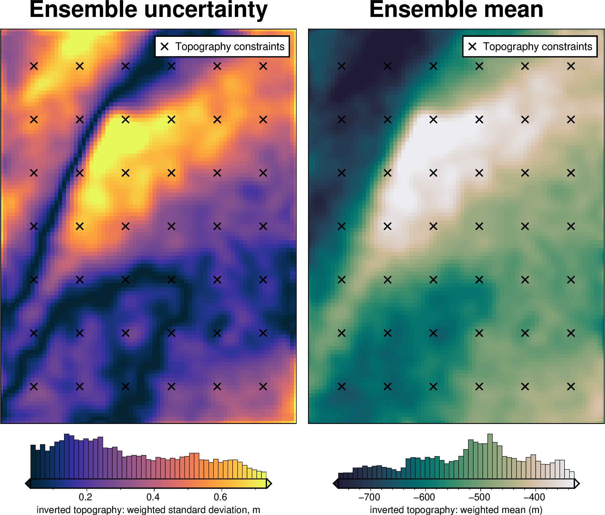
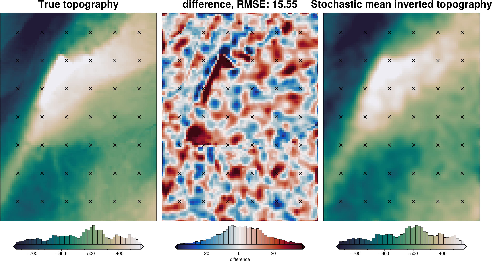
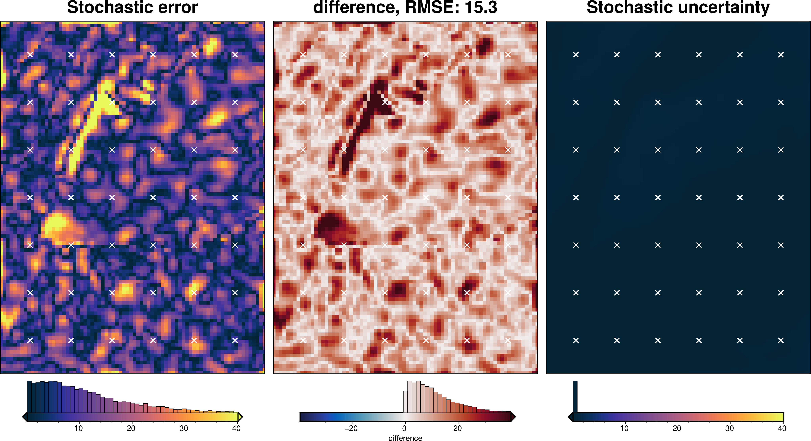
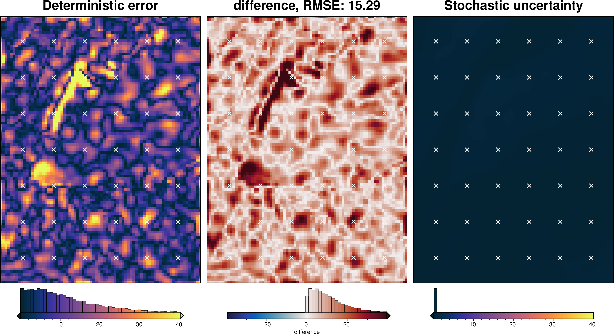
Gravity component¶
[44]:
fname = f"{fpath}_uncertainty_grav_filter"
# delete files if already exist
for p in pathlib.Path().glob(f"{fname}*"):
p.unlink(missing_ok=True)
uncert_grav_results = uncertainty.full_workflow_uncertainty_loop(
fname=fname,
runs=10,
sample_gravity=True,
gravity_filter_width=filt_width,
**uncert_kwargs,
)
stats_ds = synth_plotting.uncert_plots(
uncert_grav_results,
inversion_region,
bathymetry,
deterministic_bathymetry=final_topography,
constraint_points=constraint_points[constraint_points.inside],
weight_by="constraints",
)
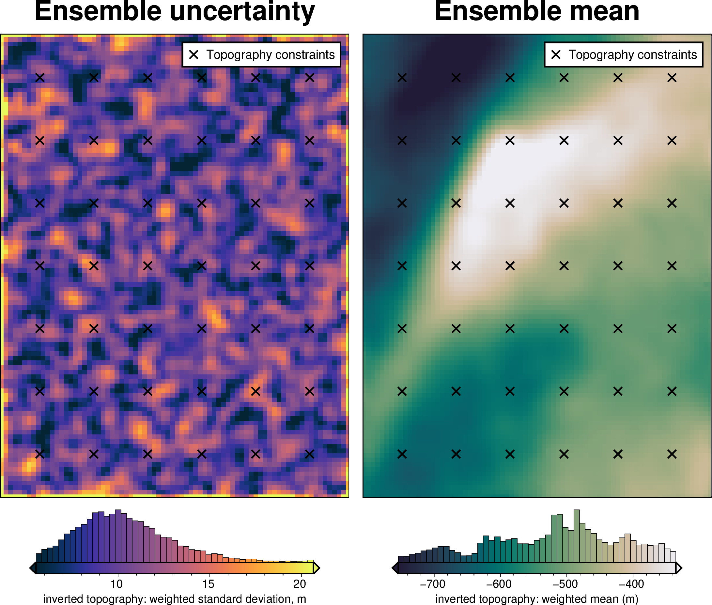
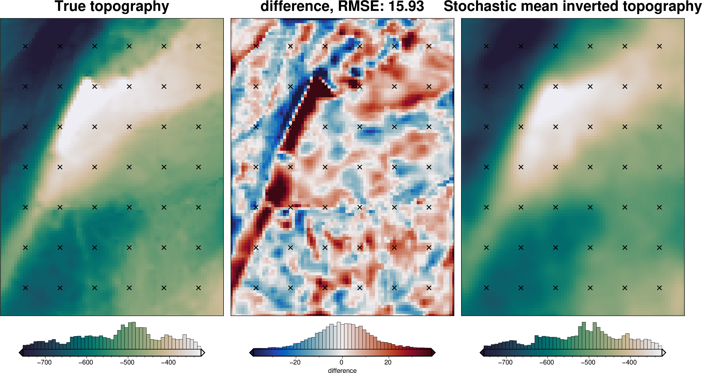
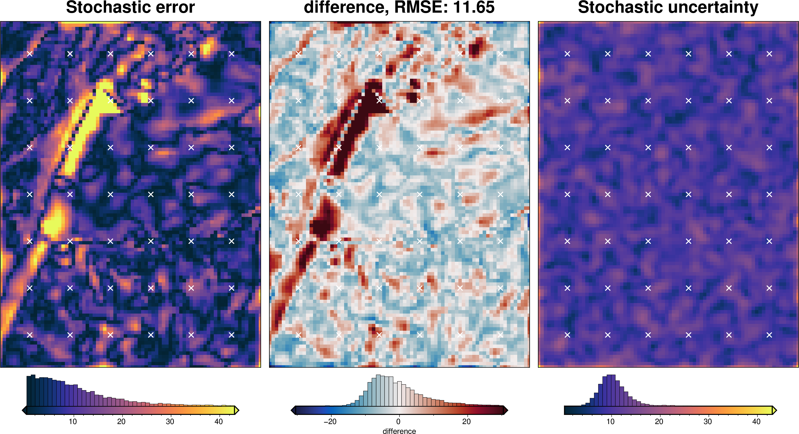
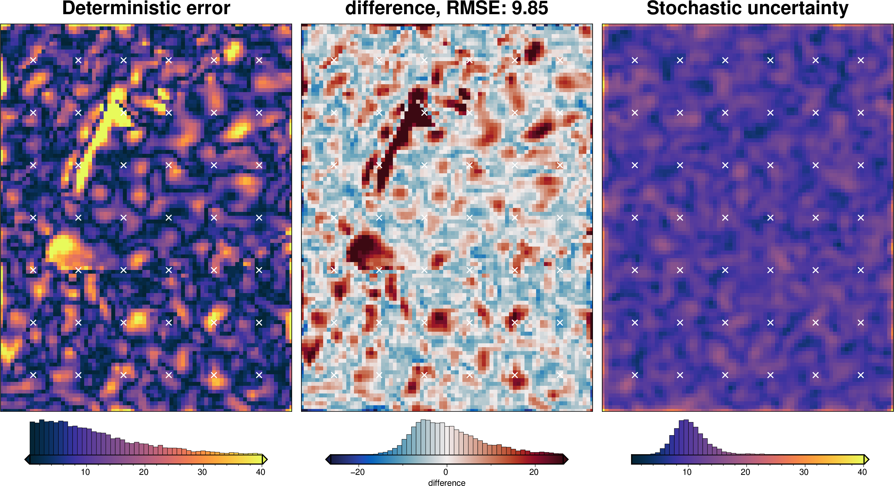
Total uncertainty¶
[45]:
fname = f"{fpath}_uncertainty_full"
# delete files if already exist
for p in pathlib.Path().glob(f"{fname}*"):
p.unlink(missing_ok=True)
uncert_results = uncertainty.full_workflow_uncertainty_loop(
fname=fname,
runs=20,
sample_gravity=True,
gravity_filter_width=filt_width,
parameter_dict=solver_dict | density_dict,
**uncert_kwargs,
)
stats_ds = synth_plotting.uncert_plots(
uncert_results,
inversion_region,
bathymetry,
deterministic_bathymetry=final_topography,
constraint_points=constraint_points,
weight_by="constraints",
)
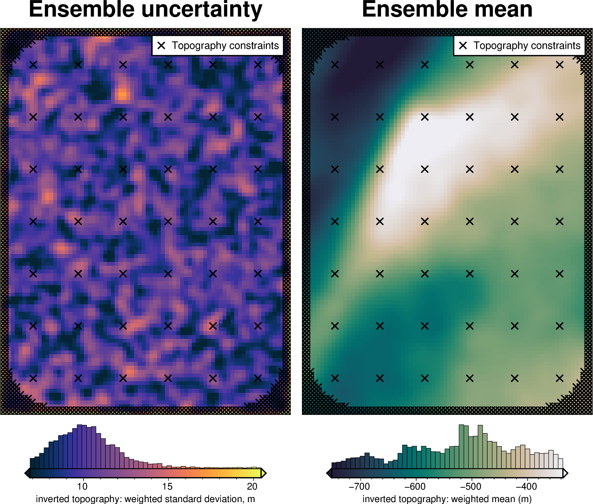
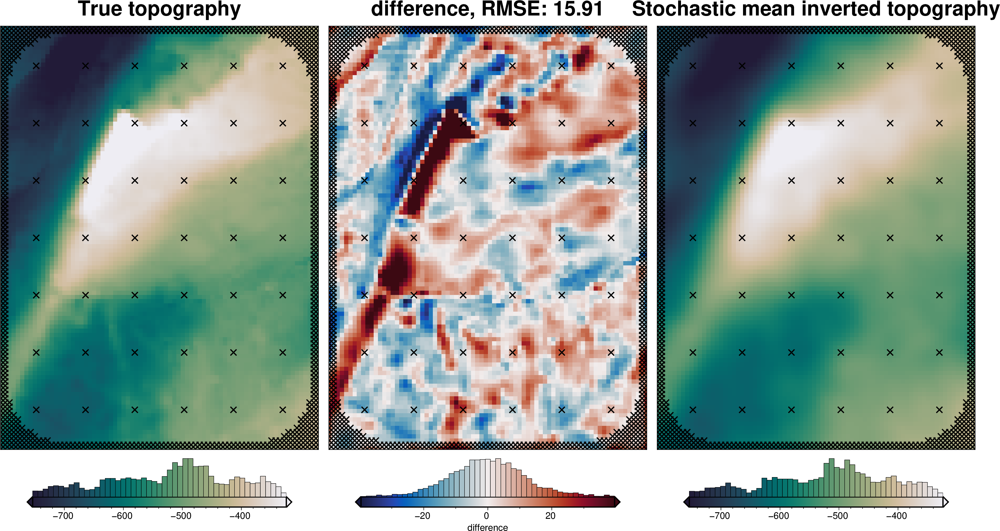
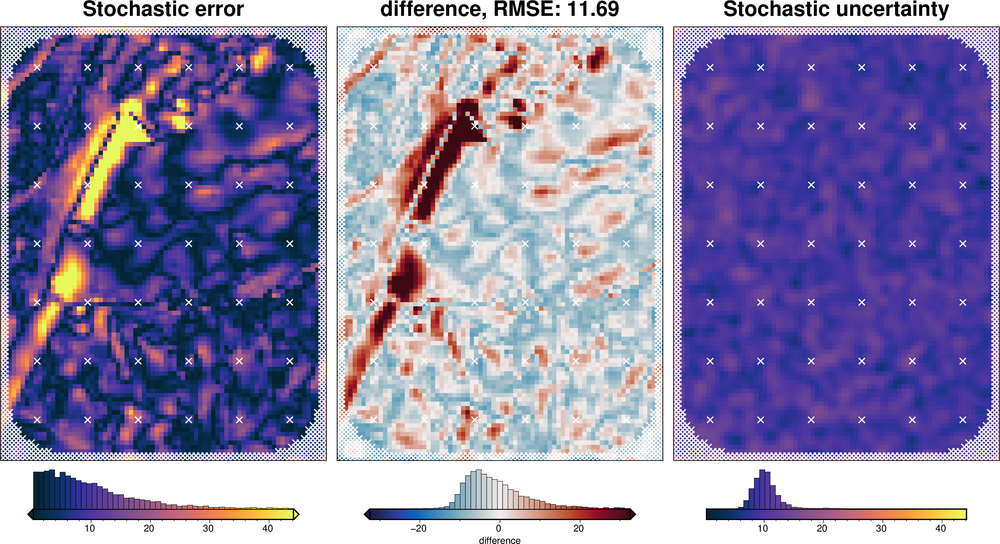
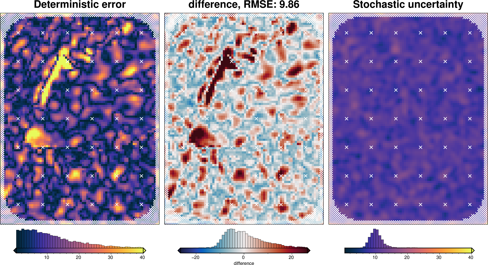
Comparing results¶
[46]:
results = [
uncert_results,
uncert_grav_results,
uncert_density_results,
uncert_damping_results,
]
# get cell-wise stats for each ensemble
stats = []
for r in results:
ds = uncertainty.merged_stats(
results=r,
plot=False,
constraints_df=constraint_points,
weight_by="constraints",
region=inversion_region,
)
stats.append(ds)
[47]:
names = [
"full",
"gravity",
"density",
"damping",
]
# get the standard deviation of the ensemble of ensembles
stdevs = []
for i, s in enumerate(stats):
stdevs.append(s.weighted_stdev.rename(f"{names[i]}_stdev"))
merged = xr.merge(stdevs)
merged
[47]:
<xarray.Dataset> Size: 247kB
Dimensions: (northing: 101, easting: 76)
Coordinates:
* northing (northing) float64 808B -1.6e+06 -1.598e+06 ... -1.4e+06
* easting (easting) float64 608B -4e+04 -3.8e+04 ... 1.08e+05 1.1e+05
Data variables:
full_stdev (northing, easting) float64 61kB 33.4 24.75 ... 16.78 26.5
gravity_stdev (northing, easting) float64 61kB 40.12 27.22 ... 13.68 20.22
density_stdev (northing, easting) float64 61kB 0.119 0.1515 ... 0.7546
damping_stdev (northing, easting) float64 61kB 3.629 1.588 ... 1.697 8.544[48]:
titles = [
"True ensemble error",
"Total uncertainty",
"Uncertainty from gravity",
"Uncertainty from density",
"Uncertainty from damping",
]
grids = list(merged.data_vars.values())
grids.insert(0, np.abs(stats[0].weighted_mean - bathymetry))
cpt_lims = polar_utils.get_combined_min_max(grids, robust=True)
fig_height = 9
for i, g in enumerate(grids):
xshift_amount = 1
if i == 0:
fig = None
origin_shift = "initialize"
elif i == 3:
origin_shift = "both_shift"
xshift_amount = -2
else:
origin_shift = "xshift"
fig = maps.plot_grd(
grid=g,
fig_height=fig_height,
title=titles[i],
title_font="16p,Helvetica,black",
cmap="thermal",
cpt_lims=cpt_lims,
robust=True,
cbar_label=f"standard deviation (m), mean: {int(np.nanmean(g))}",
hist=True,
hist_bin_num=50,
fig=fig,
origin_shift=origin_shift,
xshift_amount=xshift_amount,
yshift_amount=-1.1,
)
fig.plot(
x=constraint_points[constraint_points.inside].easting,
y=constraint_points[constraint_points.inside].northing,
style="x.2c",
fill="white",
pen="1.5p,white",
)
fig.text(
position="TL",
text=f"{string.ascii_lowercase[i]}",
fill="white",
pen=True,
font="16p,Helvetica,black",
offset="j.6/.2",
clearance="+tO",
no_clip=True,
)
if i == 0:
# plot profiles location, and endpoints on map
start = [inversion_region[0], inversion_region[3]]
stop = [inversion_region[1], inversion_region[2]]
fig.plot(
vd.line_coordinates(start, stop, size=100),
pen="2p,black",
)
fig.text(
x=start[0],
y=start[1],
text="A",
fill="white",
font="12p,Helvetica,black",
justify="CM",
clearance="+tO",
no_clip=True,
)
fig.text(
x=stop[0],
y=stop[1],
text="A' ",
fill="white",
font="12p,Helvetica,black",
justify="CM",
clearance="+tO",
no_clip=True,
)
fig.show()
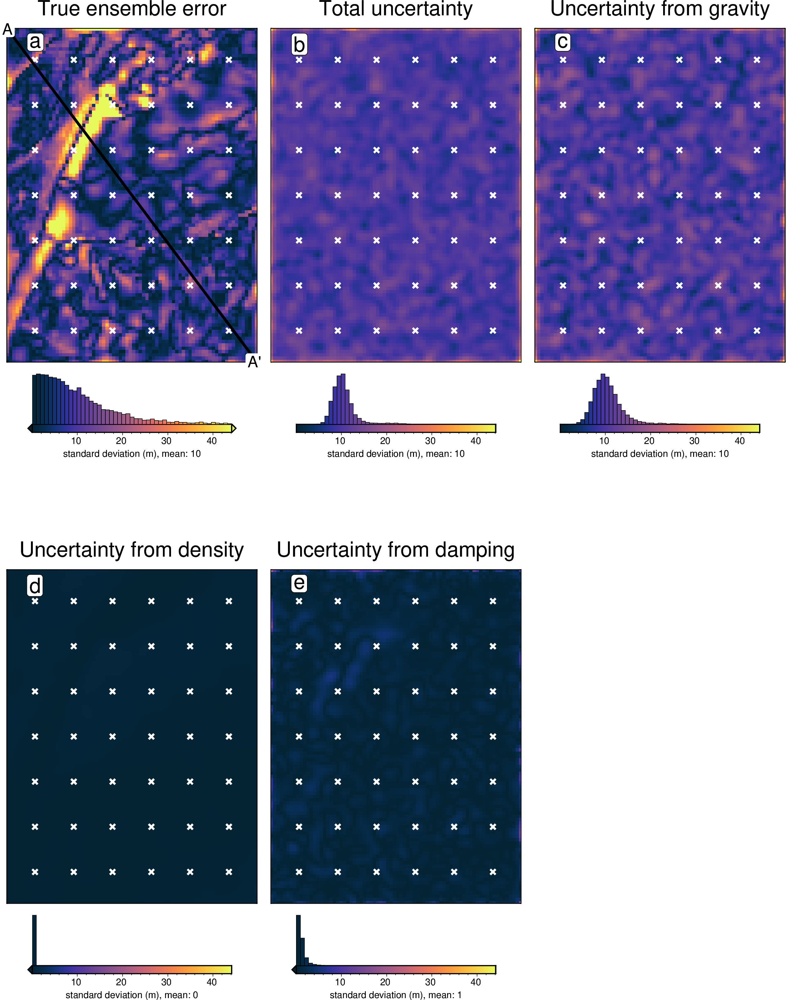
[49]:
data_dict = profiles.make_data_dict(
names=titles,
grids=grids,
colors=[
"red",
"black",
"blue",
"magenta",
"cyan",
"green",
"purple",
],
)
fig, df_data = profiles.plot_data(
"points",
start=[inversion_region[0], inversion_region[3]],
stop=[inversion_region[1], inversion_region[2]],
num=10000,
fig_height=4,
fig_width=15,
data_dict=data_dict,
data_legend_loc="jTR+jTL",
data_legend_box="+gwhite",
data_buffer=0.01,
data_frame=["neSW", "xafg+lDistance (m)", "yag+luncertainty (m)"],
share_yaxis=True,
start_label="A",
end_label="A' ",
)
fig.show()
grdtrack [WARNING]: Some input points were outside the grid domain(s).
grdtrack [WARNING]: Some input points were outside the grid domain(s).
grdtrack [WARNING]: Some input points were outside the grid domain(s).
grdtrack [WARNING]: Some input points were outside the grid domain(s).
grdtrack [WARNING]: Some input points were outside the grid domain(s).
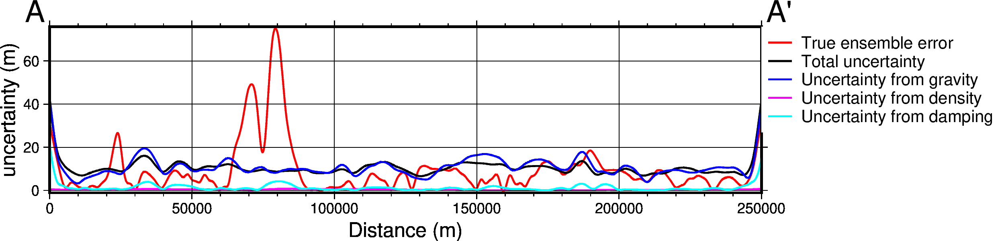
[50]:
_ = polar_utils.grd_compare(
inversion_error,
np.abs(stats[0].weighted_mean - bathymetry),
region=inversion_region,
plot=True,
grid1_name="Deterministic error",
grid2_name="Stochastic error",
robust=True,
hist=True,
inset=False,
verbose="q",
title="difference",
grounding_line=False,
points=constraint_points[constraint_points.inside],
points_style="x.2c",
)
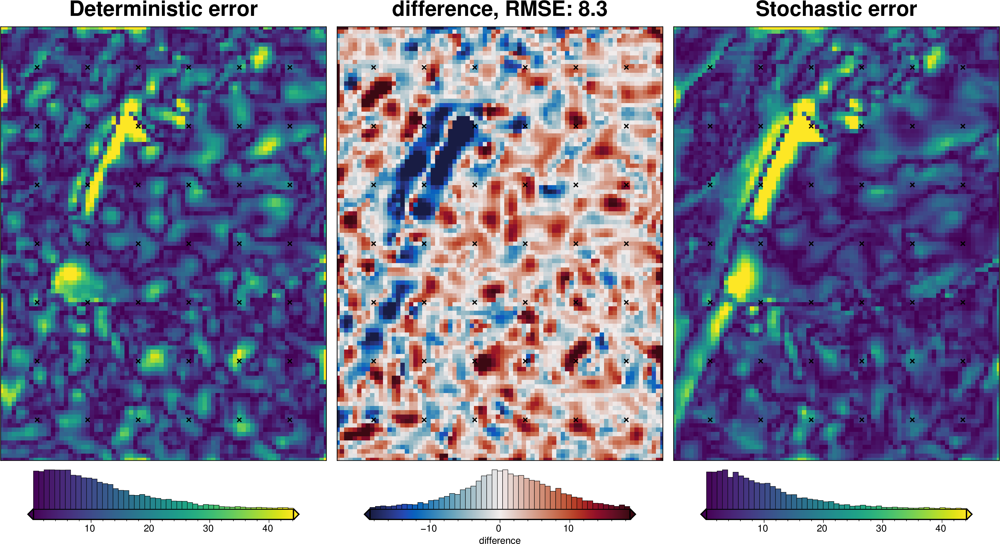
[51]:
# save results
merged.to_netcdf(f"{fpath}_sensitivity.nc")
[52]:
stats_ds.to_netcdf(f"{fpath}_uncertainty.nc")
[ ]: